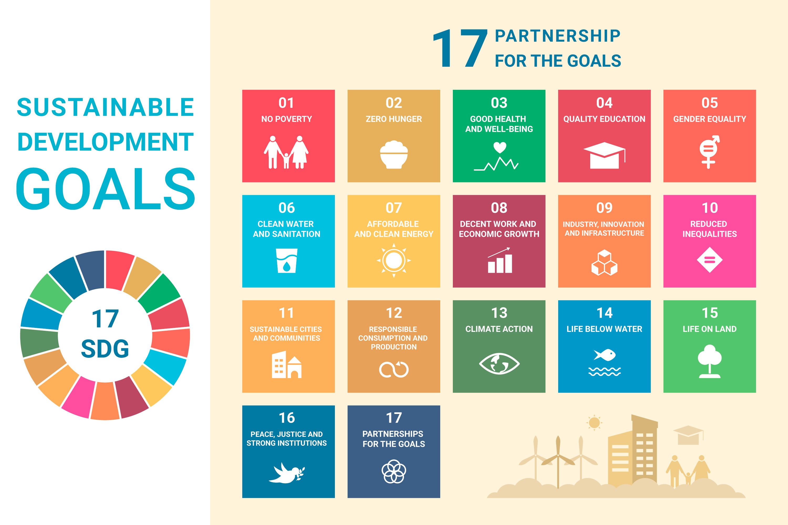

Esta situación de aprendizaje se plantea como un recurso adecuado para integrar los distintos elementos del currículo a través de tareas y actividades que resulten significativas y conectadas con la realidad. Su finalidad no se limita a la adquisición de contenidos propios de la materia, sino que también persigue el desarrollo de un alumnado competente y consciente de su papel en la sociedad.
En esta línea, cobra especial importancia el trabajo en torno a los Objetivos de Desarrollo Sostenible (ODS) de la Agenda 2030, fomentando una educación inclusiva y equitativa. La programación, en su conjunto, debe contribuir no solo al desarrollo de destrezas técnicas, sino también a la promoción de valores como la responsabilidad social y la sostenibilidad, con el fin de preparar al alumnado para afrontar los retos globales y participar de manera activa en su entorno.
Por ello, esta situación de aprendizaje se ha diseñado desde un enfoque competencial, orientado a integrar conocimientos teóricos (saber), habilidades prácticas (saber hacer) y valores éticos y sociales (saber ser).
En la siguiente imagen se muestran los ODS de la Agenda 2030:
